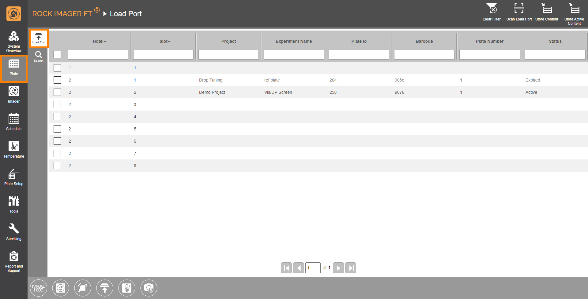
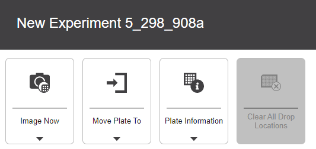

Plate Menu¶
The Plate Menu is where you interact with the plates inside your imager. It comprises two tabs: The Search tab and the Load Port tab.
Jump to:
Load Port Tab¶
The Load Port tab displays data about the plates in the Load Port, assuming they have been scanned. There are up to 11 available slots, the top slot is a dedicated slot for a Linbro plate, and the rest can be used to store SBS plates. The Load Port tab is designed to mimic the hardware to provide a better visualization.
{kind=link}
Load Port Tab
There are four icons on the upper-right corner of the screen:
The Scan Load Port lets you add plates to the system. After plates are successfully scanned, they will be left in the Load Port until you give further commands. This way, if you choose to manually image a plate, there will not be any unnecessary delay because you don’t have to move the plate from the Storage.
To move all plates to Storage at once, click the Store Content icon .
Clicking Store Active Content will tell ROCK IMAGER FT to only move plates to Storage that have on-going schedules (the Status column says Active).
{kind=link}
{kind=link}
{kind=link}
Tip
Learn more on how to add plates to ROCK IMAGER FT.
Search Tab¶
The Search tab allows you to quickly find registered plates inside the system’s Storage facility or Load Port. You can search a plate based on its criteria, such as project name, barcode number, dispense date, etc. The search results are then organized alphabetically, depending on the column your cursor is hovering over.
Note
If a plate is currently located under an imager, it will appear highlighted in yellow and the Status column says On Imager.
{kind=link}
Search tab
Tip
Perform a plate search to find out if there are any expired plates that should be removed from the system, which you can see from the Status column.
There are two icons on the upper-right corner of the screen:
{kind=link}
Command Panel Options¶
If you click on any plate row on either the Load Port or Search tab, a command panel will appear that provides you with four options, as shown below.
{kind=link}
Command Panel
Image Now lets you image a plate immediately. Learn more about Initiating an On-Demand Imaging Session.
Move Plate To moves the selected plate(s) to Storage or Load Port. You can also move the plate to imager(s) in case you want to inspect its content.
Plate Information shows you the plate information and its imaging schedule.
{kind=link}
{kind=link}
{kind=link}
Plate Information
Hand Scan lets you manually add a plate to the Load Port by inputting the experiment’s barcode. This only applies to the Load Port tab only.
Sometimes some drops might grow beyond the original drop size. The Clear All Drop Locations button allows you to reset a drop location on a per-plate basis.
{kind=link}
{kind=link}
Note
If your current plate doesn’t have any drop locations, this option will become unavailable.
The Plate Status¶
The Status column in the Search and Load Port tabs provides direct information about the status of plates inside the imager. Below are the different terms that can appear in the Status column and what they indicate about the plate’s status:
ERROR: Some of the plate information is missing, such as the barcode number or plate name. Double-check your experiment in ROCK MAKER to make sure you have designed the experiment correctly.
Active: The plates are active and being queued for imaging.
Expired: A plate has been imaged.
Imaging: A plate is being imaged.
Duplicate: ROCK IMAGER FT recognizes two different plates with a matching barcode number.
Unknown: The plate is not registered in the system. The most common example is because the system doesn’t recognize the barcode number.
Overview: ROCK IMAGER FT is trying to locate a drop.